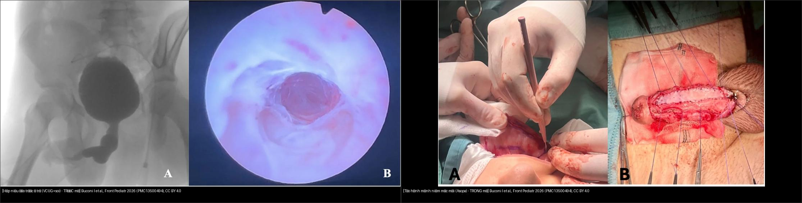
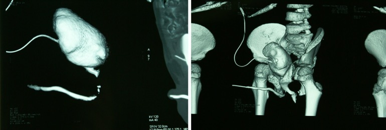
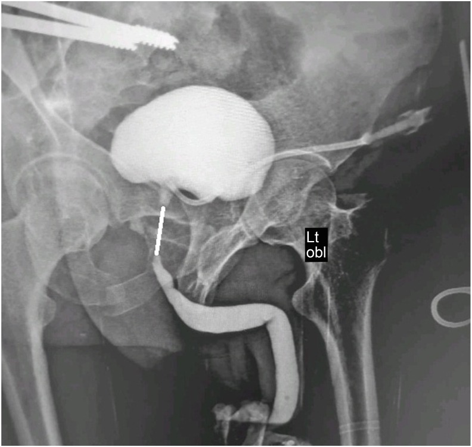
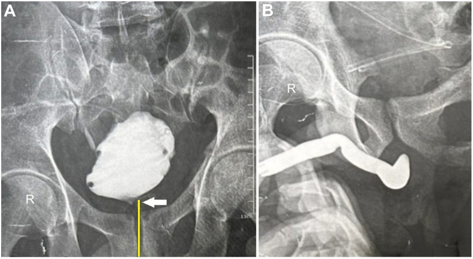
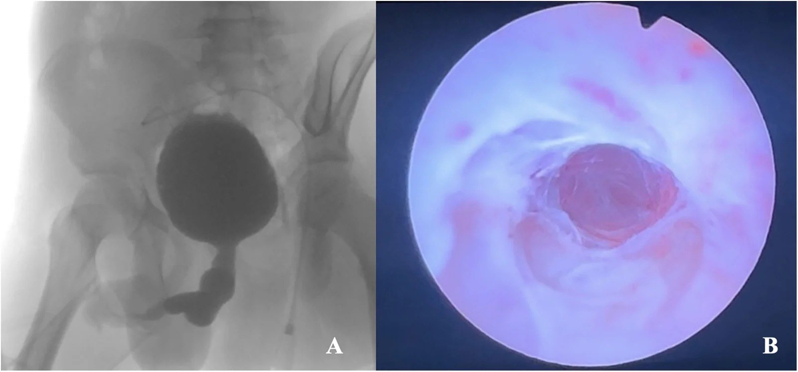
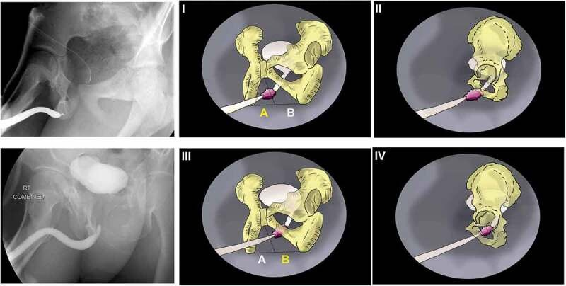

642 — Theo dõi & biến chứng dài hạn sau chấn thương đường tiết niệu dưới ở trẻ: hẹp niệu đạo (thời điểm tạo hình), tiểu không tự chủ, rối loạn cương & nhiễm trùng niệu tái phát
Tags: pattern:hep-nieu-dao pattern:tieu-khong-tu-chu pattern:roi-loan-cuong vung:bang-quang-nieu-dao-nhi score:Webster protocol:RUG protocol:VCUG protocol:uroflowmetry
Mức chắc chắn (certainty): tổng hợp y văn (literature synthesis) — nhóm tự biên từ y văn mở (nghiên cứu đoàn hệ nhiều ca + tổng quan) có số liệu định lượng; 4 ca trong quiz là ca nguyên văn (verbatim case) chép đúng tuổi – cơ chế – chú thích gốc.
Câu hỏi gốc sau khi đã cứu sống và dẫn lưu được trẻ (bài 637): vài tháng – vài năm sau, cái gì sẽ hành trẻ? Hơn một nửa trẻ bị chấn thương niệu đạo liên quan vỡ khung chậu (pelvic fracture urethral injury, PFUI) sẽ có biến chứng muộn — hẹp niệu đạo là phổ biến nhất (41,7%), rồi rối loạn cương (29,3%), tiểu không tự chủ (22,0%), nhiễm trùng niệu tái phát và phải mổ lại (37,5%). Đây là bài đọc hình ảnh để theo dõi các biến chứng đó và chọn thời điểm mổ.
1. Tổng quan — TẠI SAO hẹp hình thành + ngưỡng định lượng
A. Sinh lý bệnh (pathophysiology)
- Đứt niệu đạo sau do lực cắt (shearing) ở ngã ba bóng–màng (bulbo-membranous junction) để lại khoảng khuyết (distraction defect) giữa đầu niệu đạo hành và cổ bàng quang. Khoảng khuyết này lấp bằng máu tụ → mô hạt → xơ hóa (fibrosis).
- TẠI SAO phải chờ 3–6 tháng mới mổ tạo hình (urethroplasty): quá trình xơ hóa còn "trưởng thành" (maturing) và bàng quang–tuyến tiền liệt còn co kéo lên cao trong 2–3 tháng đầu. Mổ vào giai đoạn đang viêm/xơ chưa ổn định → miệng nối hở, hẹp lại. Chờ cho máu tụ tiêu, mô xơ ổn định, bàng quang–tuyến tiền liệt hạ xuống giúp miệng nối không căng.
- TẠI SAO trẻ khác người lớn: tuyến tiền liệt trẻ còn nhỏ → bàng quang nằm cao hơn và dài hơn; xơ hóa tiến triển ở mô đang phát triển → hẹp vừa tái phát vừa cản trở tăng trưởng niệu đạo; trẻ thường được dẫn lưu bằng mở dẫn lưu trên xương mu (suprapubic cystostomy, SPC) trước.
B. TẠI SAO thấy được trên hình ảnh — vật lý chuỗi xung
- Chụp niệu đạo ngược dòng (retrograde urethrography, RUG) + chụp bàng quang khi đi tiểu (voiding cystourethrography, VCUG) kết hợp: thuốc cản quang pha loãng (~150–250 mg I/mL) bơm ngược từ hố thuyền (fossa navicularis) và bơm trong bàng quang qua dẫn lưu trên xương mu; hai cột thuốc gặp nhau cho thấy khoảng khuyết thực (true gap) — đo bằng mm/cm giữa đầu xa niệu đạo hành và cổ bàng quang.
- Điểm mấu chốt vật lý: khoảng cách càng dài → phức tạp càng cao; cổ bàng quang lệch khỏi đường giữa trên mặt phẳng trước–sau (AP) là dấu hiệu khó mổ (kéo dài thời gian mổ + mất máu nhiều hơn, tương quan rõ với độ dài khoảng khuyết).
- MRI (T2W không cản quang): mô xơ quanh miệng nối giảm tín hiệu T2 (collagen giàu nước thấp) phân biệt với mô mỡ–cơ lành; đo chiều dài đoạn đứt, thể tích mô xơ, vị trí cổ bàng quang và tuyến tiền liệt trên mặt phẳng sagittal → giúp chọn đường mổ (perineal vs abdominoperineal).
C. Ngưỡng định lượng cần nhớ (kết cục dài hạn)
| Kết cục (outcome) | Trẻ (pediatric) | Nguồn |
|---|---|---|
| Biến chứng CHUNG (mọi loại) | 54,2% (26/48, theo dõi trung vị 112 tháng) | Yang 2026 (PMC13355245) |
| Hẹp niệu đạo (stricture) | 41,7% (20/48) — và 44,1% trong loạt 68 bé | Yang 2026 / Cui 2025 |
| Tiểu không tự chủ (incontinence) | 22,0% (9/41) | Yang 2026 |
| Rối loạn cương (erectile dysfunction, ED) | 29,3% (12/41) | Yang 2026 |
| Phải mổ/can thiệp lại (reoperation) | 37,5% (18/48) | Yang 2026 |
| Hẹp lại sau mổ (reintervention) | 16,3% (32/196 thủ thuật) — thành công 83,7% | Harraz 2023 (PMC10208150) |
| Rối loạn cương (ED) sau vỡ khung chậu | 37% (gộp) | Schmid 2021 (PMC8166614) |
- 90% hẹp niệu đạo xuất hiện trong vòng 1 năm đầu sau chấn thương → cửa sổ theo dõi sát là 3, 6, 12 tháng.
- Định nghĩa THÀNH CÔNG sau tạo hình: Qmax > 10 mL/s và không phải can thiệp thêm (Yepes 2023) — dùng ngưỡng này thay vì "chỉ số Qmax bình thường".
2. Mẫu hình + chẩn đoán phân biệt theo thời điểm (gamut)
Gamut theo mốc thời gian sau chấn thương:
| Mốc | Biến chứng chính | Hình ảnh chốt |
|---|---|---|
| Cấp (< 2 tuần) | Tụ máu, rò nước tiểu, tắc ống thông, chảy máu muộn | RUG/CT cystography (bài 637) |
| Sớm (2 tuần – 3 tháng) | Hẹp đang hình thành, viêm niệu đạo, sỏi niệu đạo mới | RUG lại sau rút ống thông |
| Trung hạn (3 tháng – 2 năm) | Hẹp niệu đạo (đỉnh trong 1 năm), hẹp miệng nối tái phát, hẹp/cứng cổ bàng quang, nhiễm trùng niệu tái phát, sỏi | RUG+VCUG, uroflowmetry |
| Dài hạn (> 2 năm) | Tiểu không tự chủ, rối loạn cương, sỏi bàng quang, suy thận (tắc mạn kéo dài), tái hẹp muộn | Uroflowmetry, siêu âm, IIEF-5, niệu động học |
Gamut theo VỊ TRÍ hẹp (quyết định đường mổ):
- Niệu đạo trước (anterior: penile/bulbar): hẹp sau chấn thương dạng cưỡi ngựa (straddle) hoặc sau mổ dị tật — RUG cho thấy đoạn hẹp, giãn niệu đạo phía trên, đường đi ngoằn ngoèo.
- Niệu đạo sau tại ngã ba bóng–màng (tại miệng nối): hẹp ngắn tại chỗ nối sau tạo hình — dễ nong/nội soi.
- Cổ bàng quang / tuyến tiền liệt: hẹp–cứng (contracture), bàng quang trôi cao — khó, đường đi trước ngoài xương mu.
- Miệng sáo (meatal): hẹp miệng sáo, thường sau dụng cụ đặt ống thông lâu.
Mnemonic "STONE-WALL" (biến chứng muộn PFUI): Stricture (hẹp), Tract infection (nhiễm trùng niệu tái phát), Obstructive uropathy (ứ nước – suy thận), Neurologic/incontinence (tiểu không tự chủ), Erectile dysfunction; Weight (sỏi), Anastomotic recurrence (hẹp tái), Long-term reintervention (mổ lại), Late bladder neck contracture (cứng cổ bàng quang).
3. Bảng so sánh phân biệt (ma trận đối chiếu)
| Thực thể (entity) | Hình ảnh điển hình | Chốt vào (rule-in) | Chốt loại (rule-out) | Gợi ý xác nhận |
|---|---|---|---|---|
| Hẹp niệu đạo tái phát tại miệng nối | RUG: đoạn hẹp ngắn, vát (tapered) tại ngã ba bóng–màng, thuốc qua được khe nhỏ; giãn nhẹ niệu đạo trên | Tiền sử tạo hình niệu đạo + hẹp tại đúng vị trí nối, ngắn < 1–2 cm | Hẹp lan tỏa suốt niệu đạo trước/dài > 2 cm → phải tạo hình thay thế, không nội soi | Uroflowmetry (Qmax tụt), RUG+VCUG 3 tháng |
| Cứng/hẹp cổ bàng quang (bladder neck contracture) | VCUG: cổ bàng quang không mở / hẹp hình phễu, bàng quang trôi lên cao; có thể kèm trào ngược | Hẹp ở cổ bàng quang + trôi cao, hướng dụng cụ đi trước ngoài | Đoạn hẹp ở niệu đạo hành (xa hơn) → hẹp miệng nối thường | Niệu động học; MRI vị trí cổ bàng quang |
| Tiểu không tự chủ do thiểu năng cơ tròn (sphincter deficiency) | Không có hẹp còn lại trên RUG; bàng quang thành dày, cầu bàng quang (trabeculation) do tắc cũ; niệu động học áp lực thấp | Rò nước tiểu liên tục SAU khi đã giải quyết tắc hoàn toàn | Còn tắc/hẹp chưa giải quyết → tiểu máu cục bộ do tắc, không phải cơ tròn | Niệu động học, pad-test, cystoscopy |
| Rối loạn cương (ED) | Không thấy trên RUG; hậu quả mạch–thần kinh (mạch hành sâu, đám rối cảnh hang) do chấn thương, không phải do tạo hình | Khởi phát NGAY sau chấn thương + IIEF-5 thấp (nặng ≤ 10) | Khởi phát sau mổ tái phát nhiều lần → nghĩ tổn thương mạch mới | IIEF-5, siêu âm Doppler cương (±), testosterone |
| Nhiễm trùng niệu tái phát | Bàng quang nhiều cặn/ứ đọng; niệu đạo giãn trên ổ hẹp; sỏi cản quang trong túi thừa/sỏi niệu đạo | ≥ 2 đợt cấy (+) trong 6 tháng + ứ đọng/cặn/sỏi | Cấy (+) một lần, không ứ đọng → khuẩn trú (colonization), không kháng sinh dài | Cấy nước tiểu, siêu âm bàng quang, RUG |
| Sỏi niệu đạo/sỏi bàng quang sau chấn thương | Khuyết cản quang hình bầu dục trong lòng niệu đạo/bàng quang; ± bờ cản quang | Khuyết thuốc trong lòng ống/bàng quang + cản quang | Cục máu đông/mảnh mô → không cản quang | CT không cản quang định vị, soi bàng quang |

Trái: hẹp niệu đạo trước (anterior urethral stricture) ở trẻ — (A) chụp bàng quang–niệu đạo (VCUG) cho thấy niệu đạo dương vật hẹp, giãn phía trên và đi ngoằn ngoèo; (B) nội soi xác nhận đoạn hẹp dài. Phải: tạo hình bằng mảnh niêm mạc môi (labial mucosa graft) theo kỹ thuật Asopa — (A) lấy mảnh môi, (B) khâu căng (quilt) mảnh ghép lên giường thể hang. Nguồn: Buconi I et al., Front Pediatr 2026 (PMC13500494), CC BY 4.0. Ảnh ghép letterbox, giữ tỉ lệ.4. Protocol theo dõi + hệ phân độ/điểm chuẩn hóa
A. Lịch theo dõi sau chấn thương/tạo hình (dựa trên cửa sổ 90% hẹp < 1 năm):
- 3 tuần – 3 tháng: RUG + VCUG kết hợp (đo lại khoảng khuyết, vị trí cổ bàng quang) + siêu âm thận–bàng quang (ứ nước, cặn).
- 3, 6, 12 tháng: uroflowmetry (đo Qmax, thể tích, nước tiểu tồn dư — PVR). Thành công khi Qmax > 10 mL/s và không cần can thiệp thêm.
- > 12 tháng → hằng năm: tái khám lâm sàng (dòng tiểu, nhiễm trùng), uroflowmetry, hỏi chức năng cương/tiểu không tự chủ (IIEF-5 ở tuổi lớn), siêu âm.
- Theo dõi tối thiểu 2 năm, lý tưởng tới trưởng thành (nghiên cứu nhi có trung vị theo dõi 112 tháng).
- Chuyển tiếp (transition) sang người lớn: bàn giao hồ sơ, mô tả đường mổ cũ, nguy cơ tái hẹp muộn và ED.
B. Phân độ phức tạp theo Webster (Step 1–4 + đường bụng–đáy chậu): đây là "thang phân độ" cho mức can thiệp khi mổ lại —
| Bậc (step) | Can thiệp |
|---|---|
| Step 1 | Mở đáy chậu + cắt mô xơ đơn thuần |
| Step 2 | Cắt xương mu dưới (inferior pubectomy) |
| Step 3 | Tách thể hang sang bên / bóc niệu đạo |
| Step 4 | Đường vòng quanh xương mu (supracrural rerouting) |
| Abdominoperineal | Đường bụng–đáy chậu khi khoảng khuyết rất dài, bàng quang cổ lệch nhiều, có rò hoặc tổn thương cổ bàng quang |
- Tỉ lệ thực hiện trong loạt 737 ca: Step 1 18,8%; Step 2 17,6%; Step 3 46%; Step 4 1,8%; đường bụng–đáy chậu 5,6% (Yepes 2023).
- Thành công theo bậc: Step 4 69,2%, đường bụng–đáy chậu 74,4%, mảnh ghép ống (pedicled preputial tube) 86,4% — bậc càng cao càng giảm thành công.
- Yếu tố dự báo cần can thiệp lại trên CUG (Harraz 2023): đầu niệu đạo hành ở vùng B (sâu, OR 3,1), gãy cung mu (OR 3,9), tiền sử đã tạo hình (OR 4,2).
C. Xử trí hẹp lại — chọn bậc thấp nhất vừa đủ:
- Hẹp ngắn, tại miệng nối: nong (dilatation) → thành công ~50–66% (nhi) / nội soi cắt niệu đạo (DVIU) → ~33% (nhi); hẹp lại sau DVIU hay tái phát → chuyển tạo hình.
- Hẹp dài, phức tạp, thất bại nhiều lần: tạo hình miệng nối đầu–cuối (end-to-end / EPA) hoặc thay thế bằng mảnh ghép — mảnh niêm mạc môi/má (labial/buccal mucosa) theo kỹ thuật Asopa (dorsal inlay) khi có sẹo xơ (lichen sclerosus) và da sinh dục không dùng được (thành công tới 18 tháng trong ca nhi khoa đầu; mảnh 7 × 2 cm).
- Hẹp đơn độc, chọn lọc, trẻ lớn: bóng phủ thuốc (drug-coated balloon, DCB – paclitaxel) là lựa chọn nội soi dùng ngoài chỉ định — ca nhi đầu tiên (16 tuổi): Qmax 4,6 → 20,7 mL/s, duy trì 19,6 (3 tháng) và 18,4 mL/s (8 tháng), không tồn dư; chưa có khuyến cáo nhi khoa riêng (EAU/ESPU).
flowchart TD
A["Trẻ đã bị PFUI, theo dõi sau dẫn lưu/tạo hình"] --> B["Uroflowmetry + RUG/VCUG 3 tháng"]
B --> C{"Qmax > 10 mL/s, không triệu chứng?"}
C -->|Có| D["Theo dõi 6-12 tháng, hằng năm"]
C -->|Không| E["Hẹp tái phát — đo lại khoảng khuyết trên RUG+VCUG"]
E --> F{"Vị trí và độ dài hẹp?"}
F -->|"Ngắn < 1-2 cm tại miệng nối"| G["Nong hoặc DVIU"]
F -->|"Hẹp/cứng CỔ bàng quang hoặc dài, tái phát"| H["Tạo hình: miệng nối đầu-cuối hoặc mảnh mô"]
G --> I{"Tái hẹp sau 3-6 tháng?"}
I -->|Có| H
I -->|Không| D
H --> J["Chọn bậc Webster thấp nhất tạo miệng nối không căng"]
H --> K{"Sẹo xơ/da sinh dục kém?"}
K -->|Có| L["Mảnh niêm mạc môi/má (Asopa) hoặc mảnh ống"]
K -->|Không| J
J --> M["Theo dõi lại Qmax + RUG 3 tháng"]
D --> N{"Rò nước tiểu liên tục sau khi hết tắc?"}
N -->|Có| O["Niệu động học: thiểu năng cơ tròn — không phải hẹp"]
5. Biến thể bình thường và cạm bẫy
- CẠM BẪY SỐ 1 — "co cơ tròn đóng kín" giả hẹp trên RUG (closed sphincter pitfall): cơ vòng ngoài co khi bơm thuốc tạo hình thắt cổ chai giả ở niệu đạo màng; phân biệt bằng bơm chậm, tư thế nghiêng/3–4, chụp VCUG thì đi tiểu (khi cơ mở) — đừng chẩn đoán hẹp thật rồi mổ oan.
- RUG bàng quang KHÔNG căng đủ / thuốc yếu: bỏ sót hẹp cổ bàng quang và đánh giá sai khoảng khuyết; luôn đo lại ở thì VCUG khi bàng quang căng.
- Hẹp GIẢ do đè ép/không đặt đúng đầu ống thông ở hố thuyền → tia thuốc không nằm trục; kiểm tra bóng giữ 2 mL tại hố thuyền.
- Sau khi giải quyết hẹp (satisfaction of search): đọc hết cổ bàng quang, trào ngược, sỏi, ứ nước thận, tồn dư — đừng dừng khi thấy ổ hẹp đã hết.
- Nhầm tiểu không tự chủ do TẮC với tiểu không tự chủ do CƠ TRÒN: trẻ tắc bàng quang có thể rỉ nước tiểu (overflow) hoặc nhiễm trùng; chỉ kết luận thiểu năng cơ tròn khi đã giải quyết tắc hoàn toàn và niệu động học xác nhận.
- Đừng quy rối loạn cương cho ca mổ: phần lớn ED có NGAY từ chấn thương (tổn thương mạch hành–đám rối cảnh hang), mổ tạo hình thêm ít gây ED mới; hỏi kỹ mốc khởi phát.
- Nhiễm trùng niệu "khuẩn trú" vs nhiễm trùng thật: trẻ đặt ống thông/dẫn lưu lâu có thể cấy (+) không triệu chứng — đừng kháng sinh kéo dài vô ích; cần triệu chứng + cấy (+) ± ứ đọng/sỏi.
- Sỏi hình thành quanh miệng nối/trong túi niệu đạo sau nhiều lần mổ — tìm khuyết thuốc có cản quang thay vì chỉ đọc hẹp.
- Trẻ đang lớn: tái hẹp có thể biểu hiện giãn niệu đạo trên và bàng quang thành dày/cầu bàng quang trên siêu âm trước khi trẻ than phiền → đánh giá cả đường tiết niệu trên.
6. Tự lượng giá — Blind Quiz (ảnh trơn ngoài, đáp án ẩn trong khối chi tiết)
Ca 1 — Bé trai, chấn thương khung chậu cũ, dẫn lưu trên xương mu. 3D CT sau bơm thuốc: bàng quang nằm ở đâu so với bình thường?

- Gợi ý lâm sàng: tiền sử vỡ khung chậu, đang dẫn lưu trên xương mu.
- Câu hỏi: Dấu hiệu chính? Điều đó nói gì về đoạn niệu đạo sau? Bước tiếp theo?
Bấm để hiện đáp án (findings + chẩn đoán)
- (A) mặt phẳng sagittal, (B) tái tạo 3D: bàng quang bị đẩy/trôi lên cao (bladder elevation) và niệu đạo sau bị xóa (obliteration of the posterior urethra) — đây là hình ảnh của đứt niệu đạo sau hoàn toàn, không phải bàng quang nguyên vẹn.
- Ý nghĩa: bàng quang–tuyến tiền liệt bị kéo lên do rách dây chằng mu–tuyến tiền liệt; khoảng khuyết càng dài càng khó mổ.
- Bước tiếp theo: RUG+VCUG để đo khoảng khuyết và vị trí cổ bàng quang; MRI nếu cần đánh giá mô xơ/đường mổ.
- Nguồn ảnh: Yang Z et al., Transl Androl Urol 2026 (PMC13355245), Fig 2, CC BY-NC-ND 4.0 (giữ nguyên bản, không crop/ghép).
Ca 2 — Bé trai sau vỡ khung chậu, RUG phối hợp VCUG. Đoạn hẹp dài bao nhiêu? Dấu hiệu nào gợi mổ KHÓ?

- Câu hỏi: Khoảng khuyết dài bao nhiêu? Vì sao độ dài quan trọng? Hai yếu tố nào khác quyết định độ khó?
Bấm để hiện đáp án (findings + chẩn đoán)
- RUG + VCUG phối hợp cho thấy khoảng khuyết (distraction defect) dài 4 cm (đường trắng) giữa đầu niệu đạo hành và cổ bàng quang.
- Độ dài quan trọng: khoảng khuyết càng dài → thời gian mổ càng lâu (tương quan rs = 0,84) và mất máu càng nhiều (rs = 0,78); quyết định bậc Webster/đường mổ.
- Hai yếu tố khác: cổ bàng quang lệch khỏi đường giữa (tăng thời gian mổ p = 0,004, mất máu p = 0,002) và gãy cung mu / tiền sử đã mổ.
- Nguồn ảnh: Osama M & Abdalla MA, Asian J Urol 2025 (PMC12744763), Fig 2, CC BY-NC-ND 4.0.
Ca 3 — Cùng bệnh nhân trên, mặt phẳng trước–sau (AP). Dấu hiệu nào đây, và vì sao nó báo trước một ca mổ "khó"?

- Câu hỏi: Cổ bàng quang nằm ở đâu so với đường giữa? (B) trên RUG xác nhận gì?
Bấm để hiện đáp án (findings + chẩn đoán)
- (A) VCUG: cổ bàng quang lệch sang phải (white arrow) khỏi đường giữa (đường vàng); (B) RUG xác nhận đoạn đứt niệu đạo sau.
- Vì sao "khó": cổ bàng quang lệch nhiều → đường tiếp cận lệch, phải bóc nhiều hơn, kéo dài thời gian mổ và tăng mất máu; có thể phải dùng đường bụng–đáy chậu.
- Nguồn ảnh: Osama M & Abdalla MA, Asian J Urol 2025 (PMC12744763), Fig 3, CC BY-NC-ND 4.0.
Ca 4 — Bé trai 15 tuổi, tiền sử mổ dị tật niệu đạo nhiều lần, tiểu yếu. Ảnh (A) chụp bàng quang–niệu đạo. Chẩn đoán và bước tiếp theo?

- Câu hỏi: Hình (A) là chuỗi xung gì, thấy gì? (B) bổ sung gì? Kế hoạch mổ khi hẹp dài?
Bấm để hiện đáp án (findings + chẩn đoán)
- (A) VCUG: niệu đạo dương vật hẹp (stenotic) với giãn niệu đạo phía trên và đường đi ngoằn ngoèo (tortuous) → hẹp niệu đạo trước dài; (B) nội soi xác nhận đoạn hẹp dài.
- Bệnh cảnh: hẹp dài tái phát sau mổ dị tật niệu đạo nhiều lần, kèm lichen sclerosus trên mô bệnh.
- Kế hoạch: khi da sinh dục không dùng được → tạo hình bằng mảnh niêm mạc môi/má theo Asopa (dorsal inlay) một thì (mảnh báo cáo 7 × 2 cm); theo dõi tới 18 tháng không tái phát.
- Nguồn ảnh: Buconi I et al., Front Pediatr 2026 (PMC13500494), Fig 1, CC BY 4.0.
Ca 5 — Đọc "bản đồ vùng" trên chụp niệu đạo. Đầu gần niệu đạo hành nằm ở vùng nào dự đoán phải can thiệp lại?

- Câu hỏi: Vùng A và B khác nhau thế nào? Vị trí nào tiên lượng xấu hơn?
Bấm để hiện đáp án (findings + chẩn đoán)
- Sơ đồ/ảnh minh họa xác định vị trí đầu gần niệu đạo hành so với cung mu: vùng A (nông, ngay dưới cung mu) vs vùng B (sâu, kéo vào trong ổ chậu).
- Vùng B là yếu tố dự báo độc lập phải can thiệp lại: OR 3,1 (KTC 1,1–8,5; p = 0,02) — cùng với gãy cung mu (OR 3,9) và tiền sử đã tạo hình (OR 4,2).
- Ý nghĩa: dùng để tư vấn trước mổ và chọn bậc can thiệp (nomogram phân biệt 77,3%).
- Nguồn ảnh: Harraz AM et al., Arab J Urol 2023 (PMC10208150), Fig 1, CC BY 4.0.
Ca 6 — Ảnh ghép đối chiếu: cận lâm sàng (trái) và trong mổ (phải). Gọi tên bệnh và can thiệp.
- Câu hỏi: Bên trái chẩn đoán gì? Bên phải làm gì? Vì sao chọn mảnh niêm mạc môi?
Bấm để hiện đáp án (findings + chẩn đoán)
- Trái = hẹp niệu đạo trước dài ở trẻ — VCUG: đoạn hẹp + giãn phía trên + ngoằn ngoèo; nội soi xác nhận.
- Phải = tạo hình bằng mảnh niêm mạc môi (Asopa, dorsal inlay) — (A) lấy mảnh môi, (B) khâu căng mảnh lên giường thể hang.
- Vì sao mảnh môi/má: niêm mạc miệng biểu mô dày, ít lông, giàu mạch, chịu được nước tiểu tốt hơn da sinh dục đã bị viêm xơ (lichen sclerosus).
- Nguồn: Buconi I et al., Front Pediatr 2026 (PMC13500494), Fig 1 + 3, CC BY 4.0. Ảnh ghép letterbox.
Bài liên quan chéo
- 600 – Tổng quan Hệ Nhi khoa
- 637 – Chấn thương bàng quang & niệu đạo ở trẻ (AAST, vỡ ngoài/trong phúc mạc, đứt niệu đạo sau) (bệnh cảnh CẤP — bài này là phần theo dõi MUỘN của cùng đường bệnh)
- 636 – Cấp cứu niệu–sinh dục nhi (chấn thương thận AAST & xoắn tinh hoàn/buồng trứng)
- 635 – Dị tật hệ tiết niệu nhi (SFU/VUR/PUV) (PUV cũng gây bàng quang thành dày/tắc nghẽn — DDx)
- 140 – Lách & chấn thương tạng đặc: AAST
- 920 – Nút mạch trong chảy máu tiêu hóa (nguyên lý can thiệp mạch — liên hệ chảy máu muộn)
Ảnh
- Tên file:
642-bien-chung-muon-chan-thuong-nieu-dao-nhi_<Modality>_<SourceID>.jpg. Chi tiết nguồn + giấy phép:images/CREDITS.mdvàsources.md. - Ảnh CC BY 4.0 (PMC13500494, PMC10208150) dùng được để ghép letterbox; ảnh CC BY-NC-ND 4.0 (PMC13355245, PMC12744763, PMC7807316) giữ nguyên bản, không crop/ghép.
- Radiopaedia/Eurorad/AuntMinnie: chỉ dẫn link (AuntMinnie không tải).
Không dùng để chẩn đoán độc lập khi chưa có người hướng dẫn.